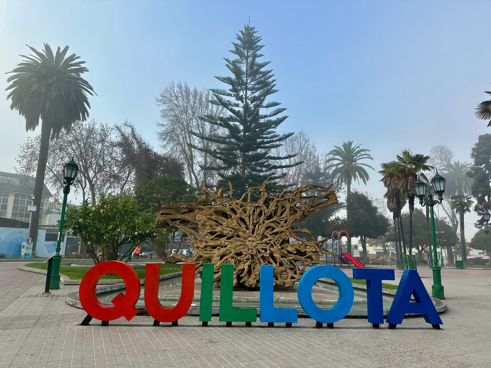

Quillota
Ubicado a 3 horas de Santiago mas especificamente Valparaíso (la V region), esta localidad destaca debido a su gran inversion en el sector de la agrario siendo esta su principal actividad economica, tambien es conocida por su valor historico ya que cuenta con el primer hospital de Chile y el cementerio mas antiguo del pais.

¿Que hace a este lugar tan relevante en los ultimos tiempos?
Ademas de lo mencionado anteriormente (agricultura, historia etc), quillota es un sector bastante golpeado por la Megasequía, padeciendo un deficit del 70% en lluvias, los embalses de Los Aromos y Peñuelas que podian almacenar entre 35 a 95 millones de metros cubicos presentaron en 2020 el embalse Peñuelas fue secado casi por completo.
Actualmente quillota se encuentra en un "mejor" estado (fluvialmente hablando) sin embargo esto no lo deja excento de padecer sequias y otras aflicciones medioambientales. Por las razones mencionadas anteriormenete es que seleccionamos a Quillota como el escenario perfecto para nuestro Sistema de Recollecion fluvial.